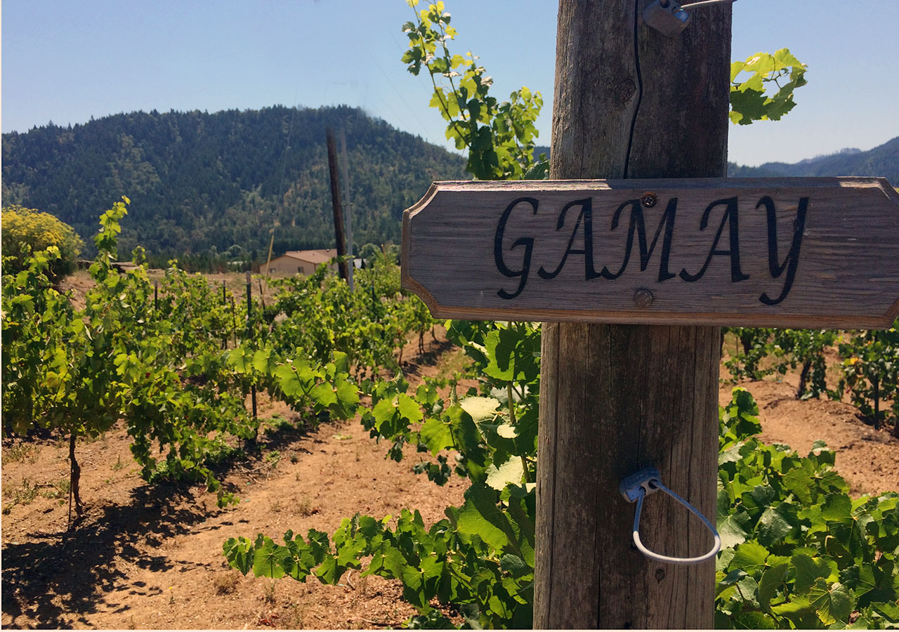
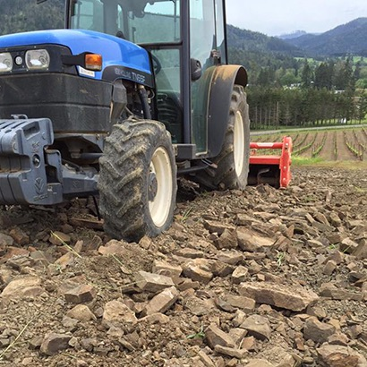
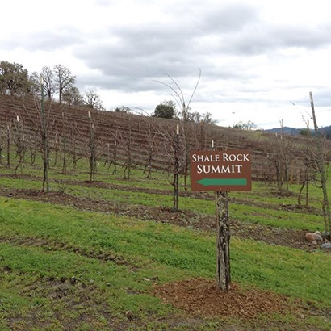
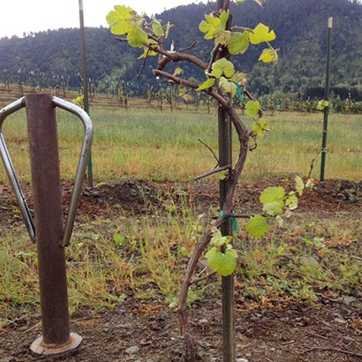
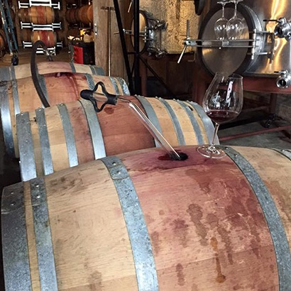

Our story
Two hippies,a magic bus &a lot of vines.
In 1970 a young couple pointed a 1965 Volkswagen bus in a generally northern direction and found the Umpqua Valley. Half a century later, the second generation is still pushing the envelope.
Roots
Old sheep pasture
The family discovers the “banana belt” of Oregon, the Umpqua Valley, and buys 54 acres of old sheep pasture. A cabin goes up.
A bus full of twigs
A road trip all the way to New York state for vine cuttings. The bus comes home stuffed with Baco Noir, Seyval Blanc, Cayuga and others. Planting begins.
Put a cork in it
The first red is fermented all in one vat on a shoestring budget. Vin Maison Rouge becomes a closely guarded family recipe – hand-corked by young Marc.
First medals
Estate-grown Chardonnay and Riesling take silver at the Oregon State Fair.
Baco makes history
Girardet bottles Baco Noir as a varietal for the first time.
Second generation
Marc takes the reins
Marc takes over the winemaking – at 24, the youngest winemaker in the state.
Gold for Pinot
Marc’s first Pinot Noir wins gold at the Pacific Rim International Wine Competition.
T-Rex finds Unicorn Ridge
Ploughing with a bulldozer bought at auction, Marc discovers Unicorn Ridge – rocks from an ancient sea bed, now the vineyard’s greatest asset.
“One of Oregon’s best red wines…”
Girardet Baco Noir is recognized by Matt Kramer in The Oregonian.
To bush or not to bush
After a trip to the Rhône, all new vines are bush-trained – a first in Oregon – and the estate converts to sustainable farming with locally sourced horse-manure compost.
From the foggy foothills
Eight tenths of an acre of Teroldego are planted on Unicorn Ridge.
Touchdown
Marc’s small airplane loses its engine and he lands on the interstate. Touchdown Red is released to commemorate it.
New vines
Pushing the envelope
Plantings of Petite Sirah (Durif), Grenache and Carmenere.
Unicorn magic
Kristie joins the vineyard – and turns out to be surprisingly great at winemaking.
Ol’ Gnarl
The Petite Sirah reaches production in a new blend named after a 500-year-old oak overlooking the vines. The first Grenache is released.
The vines that refused to die
An abandoned block of Marechal Foch – mowed over 16 times – is rediscovered and brought back into production.
The estate vineyard
Ancient sea floor, Coast Range fog.
Our soils are rich in turbidites, 10–15 million years old, known for wines with a smooth, complex mouthfeel.
The site sits at 43.1° north – in line with southern Tuscany – on rolling ground with steep grades between 750 and 900 feet. The 3,000-foot Coast Range just to the west sends cool mountain air and evening fog over the vines.
In the Old-World way the vines are completely dry-farmed, and the farming is pesticide-free – for the wine, the people who work here, and the many animals who live in the vineyard.

Around the farm
Life on the vineyard.




Visit the tasting room
Come taste
our dirt.
The Girardet family welcomes visitors to the 54-acre vineyard property and tasting room in the old-time community of Tenmile – 15 minutes off Interstate 5, three-quarters of a mile off Coastal Highway 42.
Open Wed–Sun · 12–5 pm
- Wednesday – Sunday12:00 – 5:00 pm
- Monday – TuesdayClosed
Open year-round. Closed New Year’s Day, Easter, 4th of July, Labor Day, Thanksgiving Day, Christmas Eve, Christmas Day & New Year’s Eve.
895 Reston Road
Roseburg, OR 97471